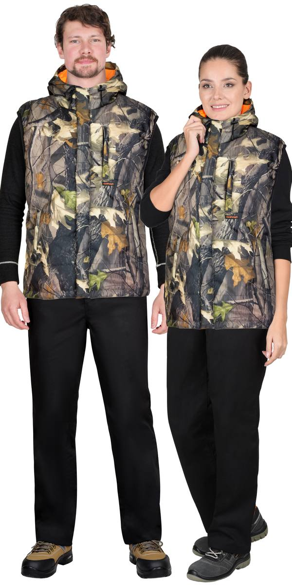

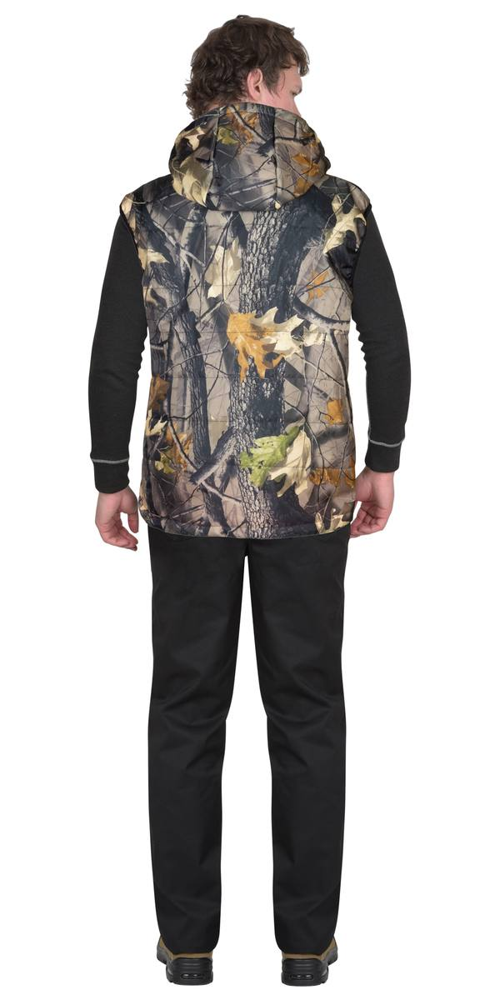
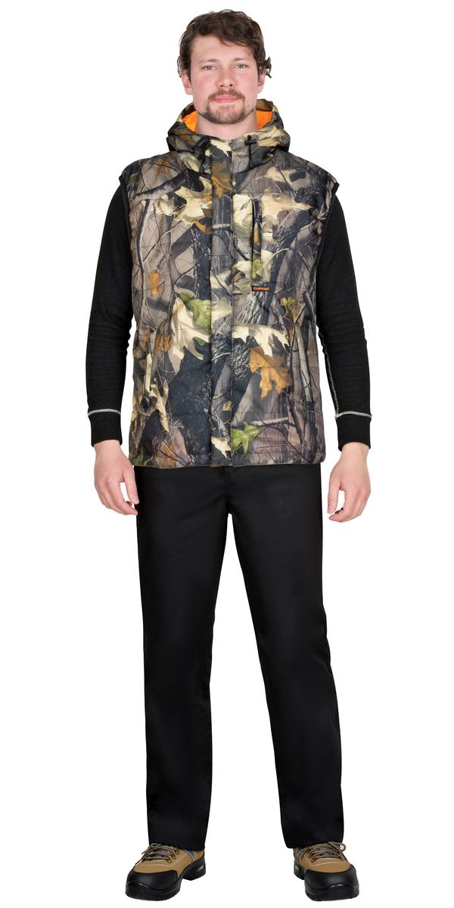
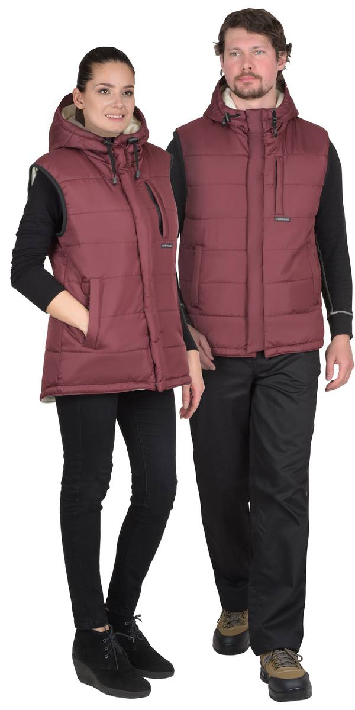
Жилет бордовый ( на подкладке флис ) (ЧЗ) тк. Дюспо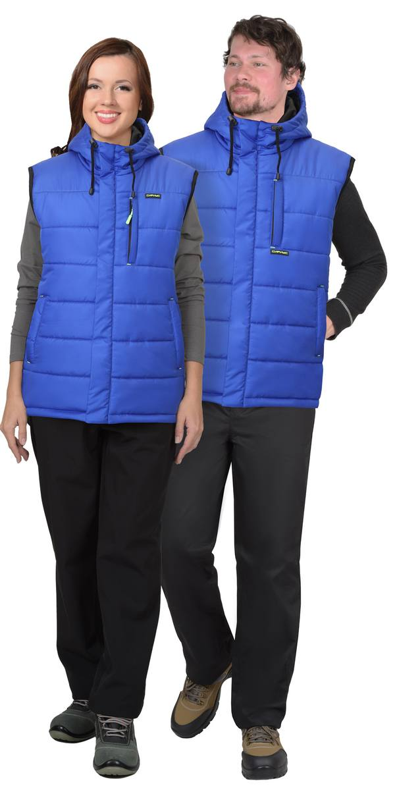
Жилет васильковый (ЧЗ) тк. Дюспо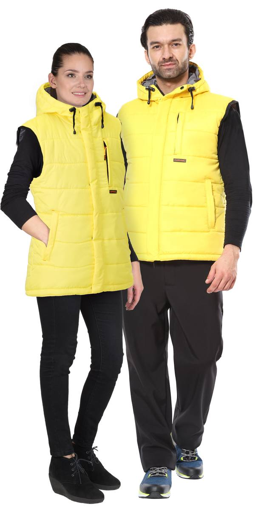
Жилет желтый (ЧЗ) тк. Дюспо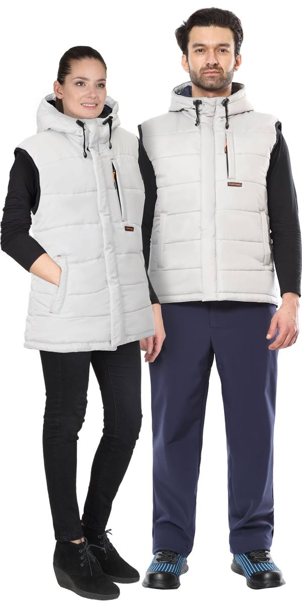
Жилет жемчужный (ЧЗ) тк. Дюспо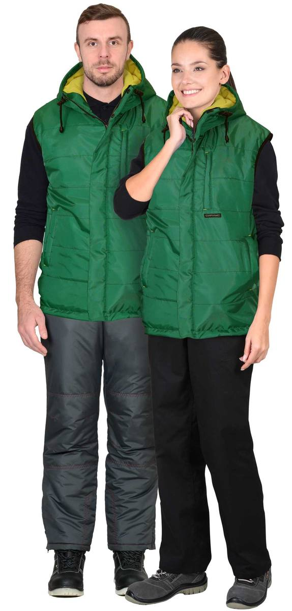
Жилет зеленый (на подкладке флис желтый) (Сработка) (ЧЗ) тк. Оксфорд (распродажа)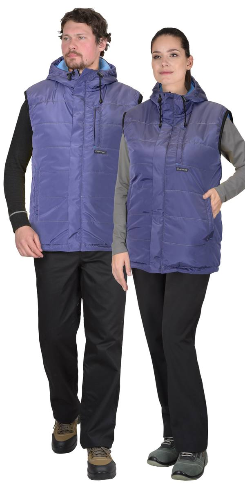
Жилет индиго (на подкладке флис) (Сработка) (ЧЗ) тк. Принц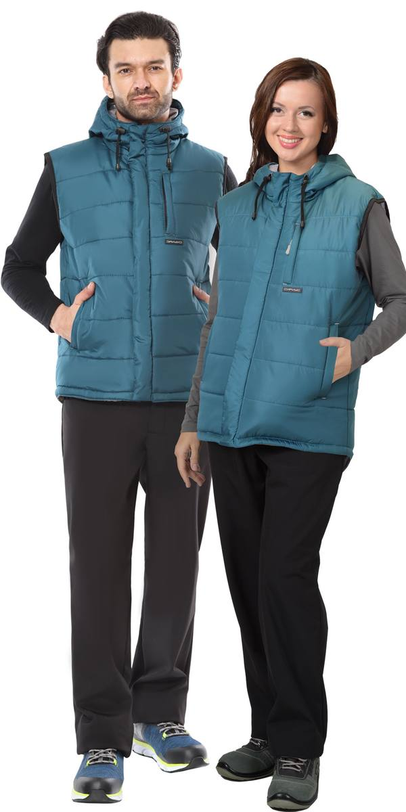
Жилет морская волна (ЧЗ)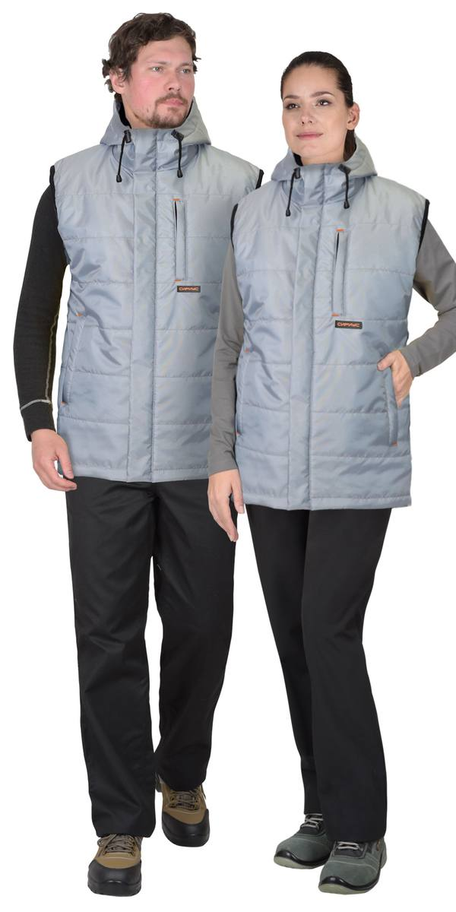
Жилет св.серый (ЧЗ) тк. Оксфорд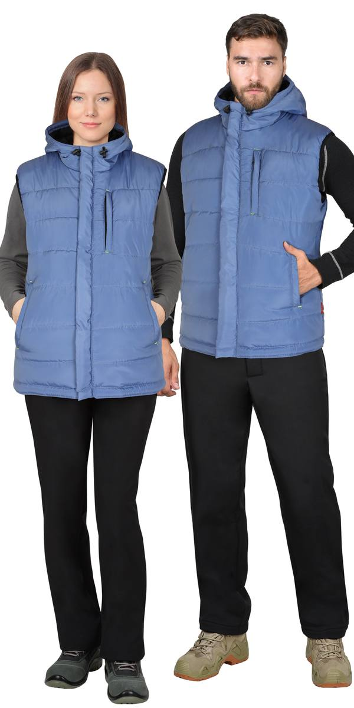
Жилет скай блю (подкладка тафетта) (Сработка) ЧЗ тк. Принц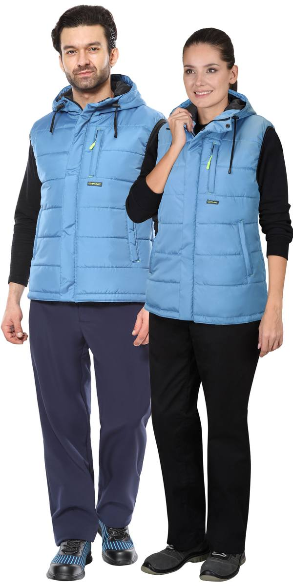
Жилет т.голубой (ЧЗ)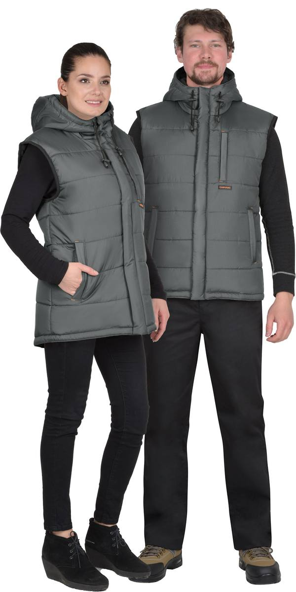
Жилет т.серый (ЧЗ) тк. Дюспо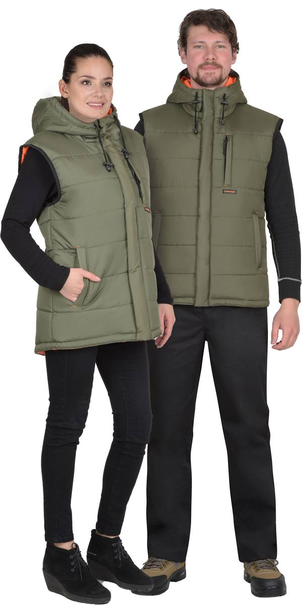
Жилет хаки (подкладка Таффета) (ЧЗ) тк. Дюспо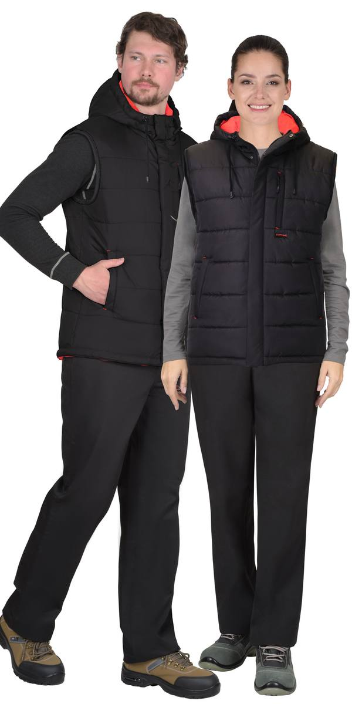
Жилет черный (ЧЗ) тк. Дюспо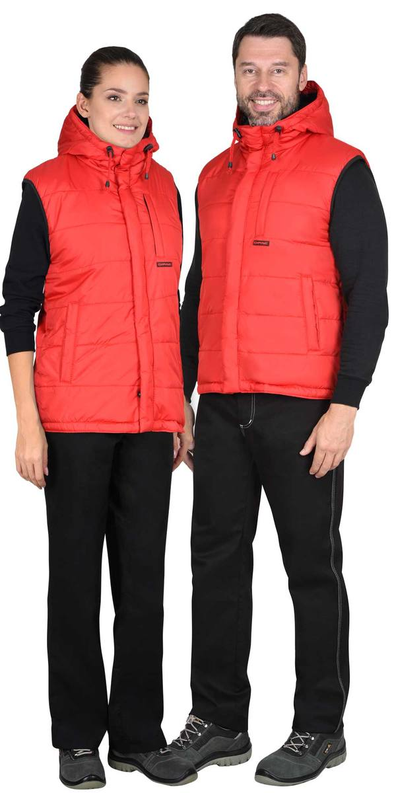
Жилет красный с флисовой подкладкой (ЧЗ) тк. Дюспо| Артикул | Вариант / цвет |
|---|---|
| 159589 | Жилет КМФ Темный лес (ЧЗ) тк. Оксфорд |
| 121870 | Жилет бордовый ( на подкладке флис ) (ЧЗ) тк. Дюспо |
| 136516 | Жилет васильковый (ЧЗ) тк. Дюспо |
| 136510 | Жилет желтый (ЧЗ) тк. Дюспо |
| 136534 | Жилет жемчужный (ЧЗ) тк. Дюспо |
| 146926 | Жилет зеленый (на подкладке флис желтый) (Сработка) (ЧЗ) тк. Оксфорд (распродажа) |
| 146924 | Жилет индиго (на подкладке флис) (Сработка) (ЧЗ) тк. Принц |
| 136528 | Жилет морская волна (ЧЗ) |
| 150180 | Жилет св.серый (ЧЗ) тк. Оксфорд |
| 146925 | Жилет св.серый (на подкладке флис голубой) (Сработка) (ЧЗ) тк. Оксфорд (распродажа) |
| 3130 | Жилет синий (ЧЗ) тк. Дюспо |
| 162649 | Жилет скай блю (подкладка тафетта) (Сработка) ЧЗ тк. Принц |
| 136522 | Жилет т.голубой (ЧЗ) |
| 153585 | Жилет т.серый (ЧЗ) тк. Дюспо |
| 136498 | Жилет т.серый (оттенок "Баклажан") (ЧЗ) тк. Дюспо |
| 134315 | Жилет хаки (подкладка Таффета) (ЧЗ) тк. Дюспо |
| 136504 | Жилет черный (ЧЗ) тк. Дюспо |
| 118189 | Жилет красный с флисовой подкладкой (ЧЗ) тк. Дюспо |